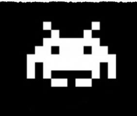

TECFA & Cité
TECFA partage son expertise dans le domaine des technologies de la formation et de l'apprentissage en proposant des services, en organisant ou participant à des événements.
Services
CeLEN: Conseil en eLearning et Education Numérique
Dans le cadre du Pôle Cité de la Faculté de psychologie et des sciences de l'éducation, l'Unité CeLEN propose trois types de prestations :
- Conseil pour la conception et l’évaluation des dispositifs eLearning ;
- L'expertise scientifique de projets e-learning ;
- Formations à la carte dans le domaine des technologies éducatives.

Événements
Séminaires Brown Bag
Organisés environ une fois par mois, le séminaire Brown Bag accueillent des présentations de recherches ou de technologies dédiées à l'enseignement, la collaboration, la communication, etc.
Site du Brown BagJeudi du jeu
Toutes les deux semaines environ, assistez à la présentation d'un jeu vidéo par des amateurs, avec démonstrationde, de 12h30 à 13h30 dans la salle S01 de Uni-Pignon. Les intéressés peuvent proposer leur propre présentation !
Site du Jeudi du jeuAutres événements

TECFA participe regulièrement à des événements publics comme le Salon du Livre ou la Nuit des Sciences. Suivez-nous sur Twitter pour connaître les dates des prochains événements auxquels nous participons !
Twitter @tecfa